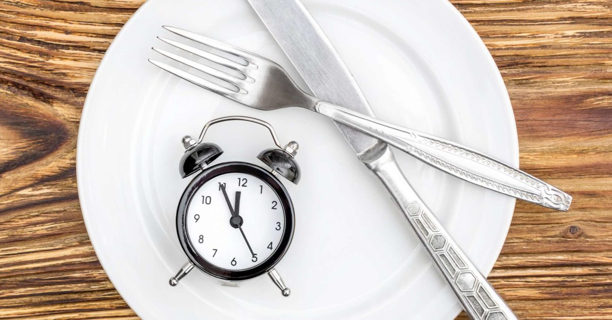
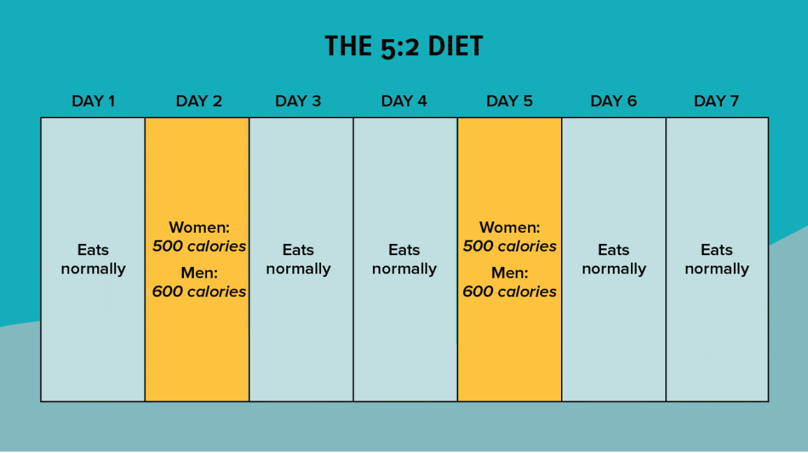

Six Popular Ways for Intermittent Fasting
Posted on March 1, 2020 at 12:00 PM

Intermittent fasting has recently become a health trend. It’s claimed to cause weight loss, improve metabolic health, and perhaps even extend lifespan.
Several methods of this eating pattern exist. Every method can be effective, but figuring out which one works best depends on the individual. Here are 6 popular ways to do intermittent fasting.
1. The 16/8 method

The 16/8 method involves fasting every day for 14–16 hours and restricting your daily eating window to 8–10 hours. Within the eating window, you can fit in two, three, or more meals. This method is also known as the Leangains protocol and was popularized by fitness expert Martin Berkhan. Doing this method of fasting can actually be as simple as not eating anything after dinner and skipping breakfast. For example, if you finish your last meal at 8 p.m. and don't eat until noon the next day, you’re technically fasting for 16 hours. It’s generally recommended that women only fast 14–15 hours because they seem to do better with slightly shorter fasts. For people who get hungry in the morning and like to eat breakfast, this method may be hard to get used to at first. However, many breakfast skippers instinctively eat this way. You can drink water, coffee, and other zero-calorie beverages during the fast, which can help reduce feelings of hunger. It’s very important to primarily eat healthy foods during your eating window. This method won't work if you eat lots of junk food or an excessive number of calories.
SUMMARY
The 16/8 method involves daily fasts of 16 hours for men and 14–15 hours for women. Each day you’ll restrict your eating to an 8–10-hour eating window during which you fit in 2, 3, or more meals.
The 5:2 diet
The 5:2 diet involves eating normally 5 days of the week while restricting your calorie intake to 500–600 for 2 days of the week. This diet is also called the Fast Diet and was popularized by British journalist Michael Mosley. On the fasting days, it’s recommended that women eat 500 calories and men 600. For example, you might eat normally every day of the week except Mondays and Thursdays. For those two days, you eat 2 small meals of 250 calories each for women and 300 calories each for men. As critics correctly point out, there are no studies testing the 5:2 diet itself, but there are plenty of studies on the benefits of intermittent fasting.
SUMMARY
The 5:2 diet, or the Fast Diet, involves eating 500–600 calories for 2 days out of the week and eating normally the other 5 days.
3.Eat Stop Eat

Eat Stop Eat involves a 24-hour fast once or twice per week. This method was popularized by fitness expert Brad Pilon and has been quite popular for a few years. By fasting from dinner one day to dinner the next day, this amounts to a full 24-hour fast. For example, if you finish dinner at 7 p.m. Monday and don't eat until dinner at 7 p.m. the next day, you've completed a full 24-hour fast. You can also fast from breakfast to breakfast or lunch to lunch — the end result is the same. Water, coffee, and other zero-calorie beverages are allowed during the fast, but no solid foods are permitted. If you’re doing this to lose weight, it’s very important that you eat normally during the eating periods. In other words, you should eat the same amount of food as if you hadn't been fasting at all. The potential downside of this method is that a full 24-hour fast may be fairly difficult for many people. However, you don't need to go all in right away. It's fine to start with 14–16 hours, then move upward from there.
SUMMARY
Eat Stop Eat is an intermittent fasting program with one or two 24-hour fasts per week.
4. Alternate day fasting
In alternate day fasting, you fast every other day. There are several different versions of this method. Some of them allow about 500 calories during the fasting days. Many of the test-tube studies showing health benefits of intermittent fasting used some version of this method. A full fast every other day can seem rather extreme, so it’s not recommended for beginners. With this method, you may go to bed very hungry several times per week, which is not very pleasant and probably unsustainable in the long term.
SUMMARY
Alternate-day fasting has you fast every other day, either by not eating anything or only eating a few hundred calories.
5. The Warrior Diet
The Warrior Diet was popularized by fitness expert Ori Hofmekler. It involves eating small amounts of raw fruits and vegetables during the day and eating one huge meal at night. Basically, you fast all day and feast at night within a four-hour eating window. The Warrior Diet was one of the first popular diets to include a form of intermittent fasting. This diet's food choices are quite similar to that of the paleo diet — mostly whole, unprocessed foods.
SUMMARY
The Warrior Diet encourages subsisting on only small amounts of vegetables and fruits during the day, then eating one huge meal at night.
6. Spontaneous meal skipping
You don't need to follow a structured intermittent fasting plan to reap some of its benefits. Another option is to simply skip meals from time to time, such as when you don't feel hungry or are too busy to cook and eat. It’s a myth that people need to eat every few hours lest they hit starvation mode or lose muscle. Your body is well equipped to handle long periods of famine, let alone missing one or two meals from time to time. Thus, if you're really not hungry one day, skip breakfast and just eat a healthy lunch and dinner. Or, if you're travelling somewhere and can't find anything you want to eat, do a short fast. Skipping one or two meals when you feel inclined to do so is basically a spontaneous intermittent fast. Just make sure to eat healthy foods during the other meals.
SUMMARY
Another way to do intermittent fasting is to simply skip one or two meals when you don't feel hungry or don't have time to eat.